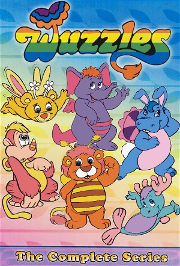

The Wuzzles (1985)
| Year | 1985 |
|---|---|
| Rating | TV-Y |
| Status | Completed |
| Seasons | 1 |
| Genre | Animation, Children, Family, Fantasy |
Disney's Wuzzles was an American animated television series created for Saturday morning television, and was first broadcast on September 14, 1985 on CBS. Wuzzles features a variety of short, rounded animal characters (each called a Wuzzle, which means to mix up). Each is a roughly even, and colorful, mix of two different animal species (as the theme song mentions, "...livin' with a split personality"), and all the characters sport wings on their backs, although only Bumblelion and Butterbear are seemingly capable of flight. All of the Wuzzles live on the Isle of Wuz. Double species are not limited to the Wuzzles themselves. From the appleberries they eat to the telephonograph in the home, or a luxury home called a castlescraper, nearly everything on Wuz is mixed together in the same way the Wuzzles are. The characters in the show were marketed extensively.
Episodes
No episodes found.